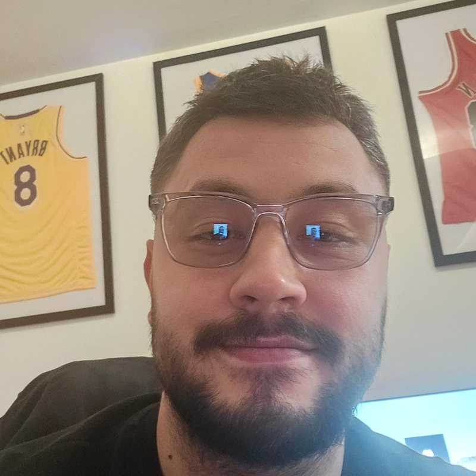

V1
Dizajn s razlogom
Lijepo nije dovoljno. Svaki element na stranici ima zadatak — da vas posjetitelj brzo razumije, vjeruje vam i javi se.
KreirAI je digitalni studio koji AI koristi kao alat za brzinu — ne kao zamjenu za ukus, strategiju ili odgovornost prema klijentu.
Vjerujemo da umjetna inteligencija najviše vrijedi kada skraćuje vrijeme od ideje do prvog gotovog rješenja, a ne kada zamjenjuje ljude koji donose odluke o brendu, dizajnu i tonu komunikacije. Zato svaki projekt prolazi kroz AI-ubrzanu izradu i ručnu reviziju prije nego što stigne do vas. Radimo s malim i srednjim tvrtkama, obrtnicima i timovima koji trebaju kvalitetan digitalni rezultat u kratkom roku, bez agencijske birokracije.
AI ubrzava izradu prve verzije; kvaliteta konačne verzije ostaje na ljudima.
Vidite napredak u svakom koraku, od početka do isporuke.
Od jednostavne web stranice do složenije aplikacije — opseg definiramo zajedno.
Radije gradimo odnos kroz više manjih projekata nego jedan veliki i kraj.

Bok, ja sam Tomislav. Dolazim iz Osijeka, a s klijentima radim diljem cijele Hrvatske — od Slavonije do Dalmacije, većinom na daljinu, a kad treba, i uživo uz kavu.
Ljubav prema dizajnu razvila se gotovo usput: iz znatiželje kako stvari izgledaju i zašto neke jednostavno „rade“, a druge ne. S vremenom sam shvatio da me ipak najviše pokreće stvaranje nečeg novog — onaj trenutak kada nešto što je jučer bilo samo ideja na papiru danas radi, izgleda dobro i nekome donosi posao.
KreirAI sam pokrenuo s jednostavnim uvjerenjem: mali poduzetnici i obrtnici zaslužuju digitalni nastup jednako kvalitetan kao velike tvrtke — bez agencijskih cijena, mjeseci čekanja i žargona koji nitko ne razumije. Umjetna inteligencija mi pomaže raditi brže, ali svaki tekst, svaki piksel i svaki redak koda i dalje prolaze kroz moje ruke prije nego što stignu do vas.
Tehnologija se mijenja gotovo svaki tjedan, pa mi je konstantno učenje dio posla, a ne hobi. Nove alate i pristupe prvo isprobam na vlastitim projektima, a tek onda ih ponudim klijentima — tako vi dobivate ono što stvarno funkcionira, a ne ono što je trenutno u modi.
„Najdraži mi je projekt onaj nakon kojeg klijent kaže: ovo je baš ono što sam zamišljao — samo bolje.“
— Tomislav Janković
Lijepo nije dovoljno. Svaki element na stranici ima zadatak — da vas posjetitelj brzo razumije, vjeruje vam i javi se.
Najviše volim trenutak kad ideja postane nešto opipljivo. Ne lijepimo gotove predloške — gradimo rješenje koje pristaje baš vašem poslu.
AI alati i web standardi mijenjaju se iz mjeseca u mjesec. Pratim ih da vi ne morate, i u svaki projekt unosim ono najbolje što trenutno postoji.
Ne razgovarate s call centrom ni s nizom posrednika. Razgovarate sa mnom — od prvog poziva do objave stranice i dugo nakon nje.
Napišite mi par rečenica o svom poslu — javit ću vam se s prijedlogom i okvirnom ponudom, bez obveze.